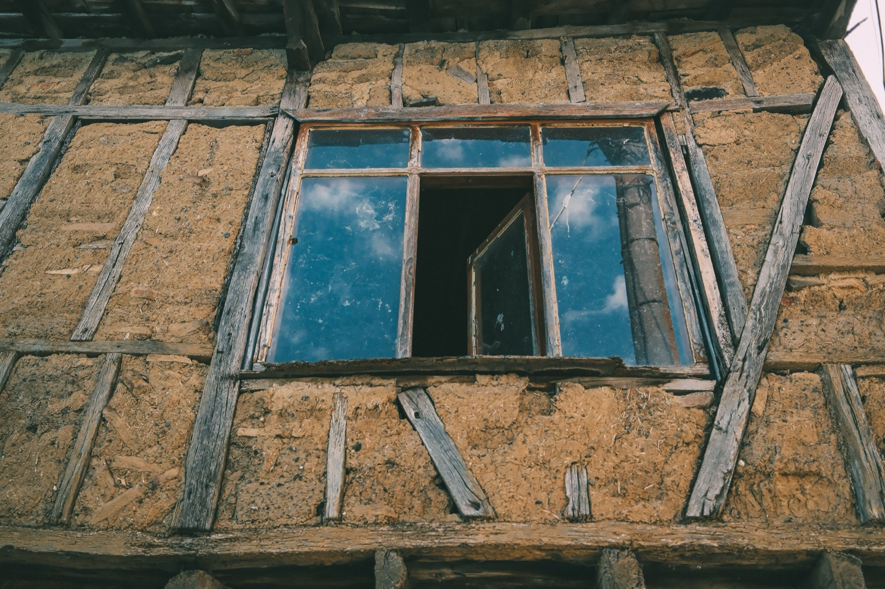

Cob Houses
Hand-sculpted earth, no bricks, no forms, just clay, sand, and straw shaped like clay on a giant scale. The most artistic natural method, and the slowest.

Cob is the most hands-on earthen method: a stiff mix of clay, sand, and straw, applied in lumps and sculpted by hand or foot into monolithic walls, no bricks, no molds, no formwork. That freedom makes it the most artistic building method there is (curves, built-in benches, sculpted niches), and also the slowest.
How the shell goes up
Clay soil, sand, and straw are mixed (traditionally by stomping on a tarp) into a thick, cohesive cob, then built up in courses on a stone or concrete stem wall, each layer allowed to firm before the next. Walls are thick, sculpted while wet, trimmed, and finished with earth or lime plaster. There's no drying-into-bricks step like adobe, the whole wall is one continuous, monolithic mass.
What it sets you back
Material cost is minimal (earth + straw); the expense is enormous amounts of labor and time. A DIY cob shell can cost very little in materials (~$20–70/m²) but represents months of physical work. Contracted cob is rare and pricey because so few builders do it. (Approximate.)
How it measures up
| Factor | Rating | Notes |
|---|---|---|
| Cost | 🟢 | Material ~free; labor is the cost |
| Artistic freedom | 🟢 | Unmatched, sculptural, curved, organic |
| Sustainability | 🟢 | Earth + straw, very low embodied energy |
| Heat/climate fit | 🟢 | Thermal mass, cool interiors |
| Build speed | 🔴 | Very slow, hand-built, monolithic |
| Moisture/rain | 🔴 | Water-vulnerable, needs great roof + base |
| Seismic/wind | 🟡 | Thick + monolithic; reinforce in quake zones |
| Permitting/finance | 🔴 | Codes rarely cover it, the real hurdle |
How doable is it?
Cob is the quintessential owner-builder method: the skill barrier is low (you can genuinely learn it in a weekend workshop), but the labor and time barrier is high, it's slow, physical, and best for people who want to make their home, not just commission it. The two hard parts are the same as all earthen building: permitting (most departments have no cob code, so you may need an engineer's stamp or an alternative-materials review) and moisture. In a wet tropical climate, cob is a real challenge, you're relying entirely on a big roof, a raised waterproof plinth, and breathable plasters to keep the rain off an earthen wall. It's a wonderful method for a personal project, casita, or garden studio; rarely the pragmatic choice for a financed primary home.
Thinking about building in Panama or Costa Rica?
SORA is a fixed-price design-build platform for foreign buyers. We build in reinforced concrete by default, and we can talk you through when an alternative method actually makes sense for the tropics. Play with cost live in the 3D configurator.
See real 2026 build costs →Frequently asked questions
Is cob cheaper than other building methods?
In materials, yes, it's mostly clay soil and straw. But it's extremely labor- and time-intensive, so the 'cheapness' assumes you (or volunteers) provide the labor. Hiring it out is expensive because very few professional builders work in cob.
How long does it take to build a cob house?
Much longer than conventional construction. Cob is hand-built and monolithic, with each layer needing to firm before the next, so a full home can take many months to over a year of steady work, it's a labor of love more than a fast build.
Can cob houses handle rain and humidity?
Only with careful design. Cob is water-vulnerable, so a wet or humid climate demands a generous roof overhang, a raised waterproof foundation, and breathable protective plasters. In persistently wet tropics it's one of the harder natural methods to pull off.
Sources & verification
Figures in this guide were checked against primary and authoritative sources on 27 July 2026. Immigration, tax, and cost figures change — always confirm the current rules with the official body or a licensed professional before acting.
- loveproperty.com — cob and eco building materials
- Build With Rise — natural earthen building